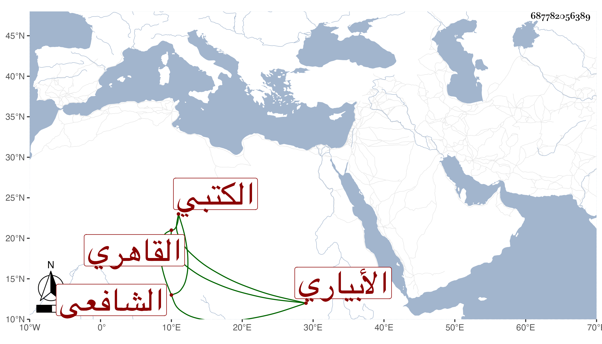

0902Sakhawi.DawLamic.ITO20230111-ara1.EIS1600.687782056389
Biography ID: 687782056389
140
أبو بكر بن علي بن زين بن عبد الله الزين الأبياري القاهري الشافعي الكتبي . ولد قبل سبعين وسبعمائة ظنا وأخبر أنه سمع نظم السيرة لابن الشهيد عليه بقراءة الغماري في الأزهر وكان خيرا ثقة ثبتا فاضلا أجاز للبقاعي وغيره . ومات في ذي القعدة سنة خمس وأربعين بالمؤيدية رحمه الله .
